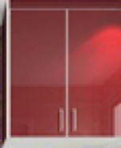
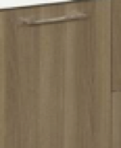
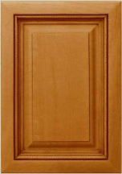

柜门种类
水晶板（晶刚）

主要有一层亚克力面层，容易清洁大理，但既然是有机材料，不防火，也不耐划，久了发黄，基层材料一般为大芯板、多层板、密度板、刨花板都有，基层喷漆后压一层亚克力面层，亚克力材质差距也很巨大，德国拜耳好但商家不会用这么好的，一般都是国产。
生态板（双饰面）

防火、耐磨，各方面性能比较均衡，面层三聚氰胺材料能部分封闭内部甲醛释放，饰面材料自然平整。---业内也称为防火板
防火板
市场上的防火板非定义的防火板，认为两面贴三聚氰胺面层即为防火板，以此为定义，生态板也被很多人定义为防火板，再狭义的定义其基材多为刨花板也有密度板，饰面材料比生态板厚，多两层纸，但最面层材料与生态板同都是三聚氰胺树脂浸泡的纸，故比生态板更防火、耐磨。但基材不如生态板。由于面层加工复杂，价格一般较生态板贵
实木门

高端，但加工工艺有讲究，基层材质含水率要控制到位，否则容易变形。普通实木门可以贴高档木皮做开放漆，也可做油漆或烤漆。
从综合性能看，烤漆、模压（吸塑）不耐划，不防火，厨房磕磕碰碰的多，除非业主真的很喜欢，否则不建议采用，毕竟不是装修一次用一两年；优点是造型丰富，用于其他柜体还是可以的。
水晶板不耐磨，容易褪色，基层材料不好的话还容易变形，不防火，好处是容易擦洗，不过对于三聚氰胺面来说优势也就那么一点点，不建议采用。
生态板及防火板相对是比较优良的材料，防火、耐划、易打理，面层三聚氰胺封闭能阻挡大部分甲醛释放，如果侧面封闭采用机器封边工艺，一般环保性没有问题，品牌橱柜商采用品牌材质环保更加没问题。市场上很多品牌商用爱格板（品牌密度板）双饰面，环保和质量没有问题。缺点是只能做平面，没有太多造型。
实木门对加工工艺要求太高，而且有随机性，即便大厂也未必能保证在冷热交替，潮湿的厨房环境里不开裂，但无奈实木高端大气上档次，有钱难以割舍的爱。